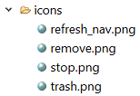

Overview
The Icon File Decorator plugin (Icofidec in short) assists the developer
in getting a quicker overview of icons used in his project.
For this purpose, it decorates nodes in the usual Eclipse navigation views (e.g. Package Explorer
or Project Explorer) that represent an image file (e.g. "png").
The plugin offers uses two decoration mechanisms,
- the Icon File Image Decorator and
- the Icon File Information Decorator.
You can enable or disable the decorators separately in the preferences as well as
configure them according to your needs.
Without Icofidec (or when it is disabled), Eclipse displays image files like this:

With Icofidec enabled like this:
Replaces in the navigation view the icon that Eclipse uses by default for displaying files
with the icon contained in the file.
Appends file size information to the file name in the navigation view.
Preferences
See here.